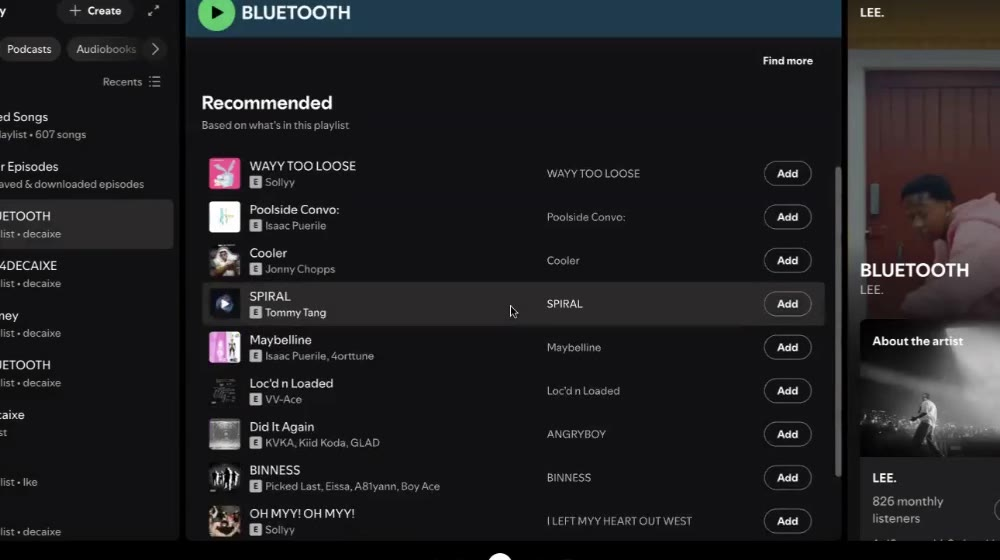
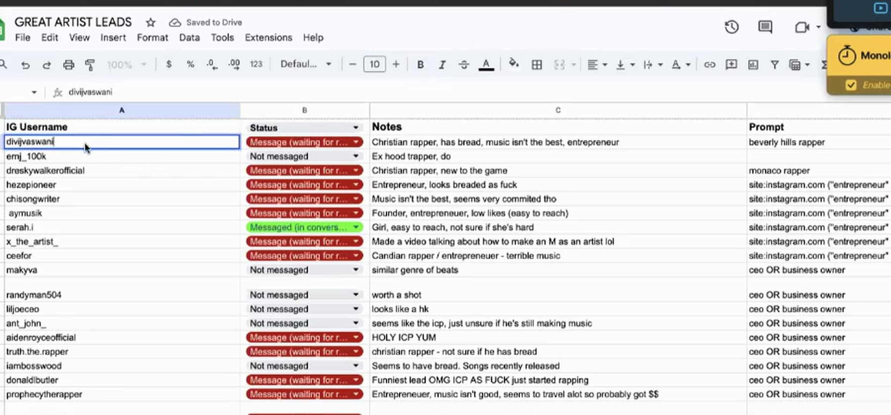
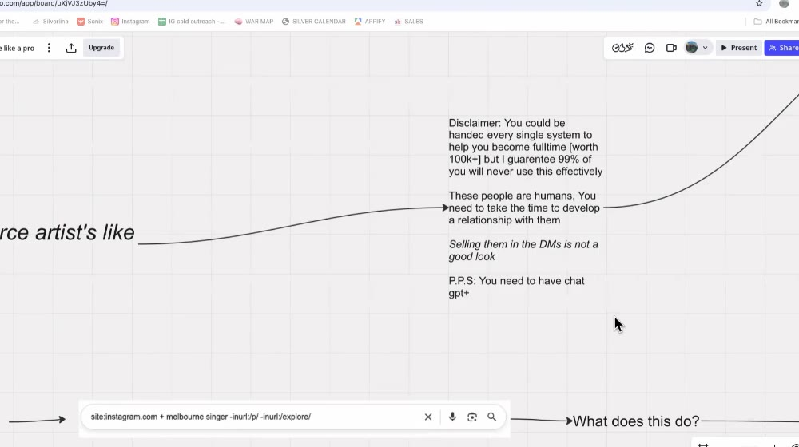
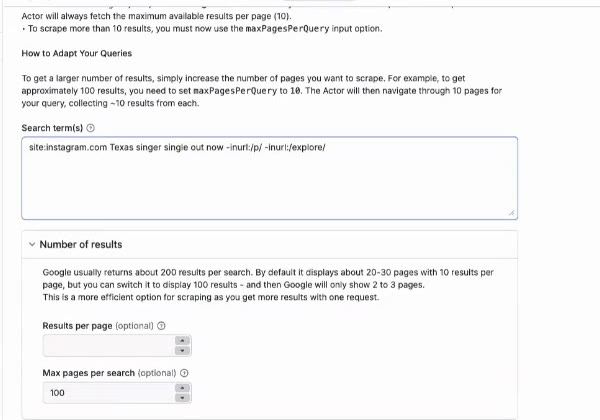
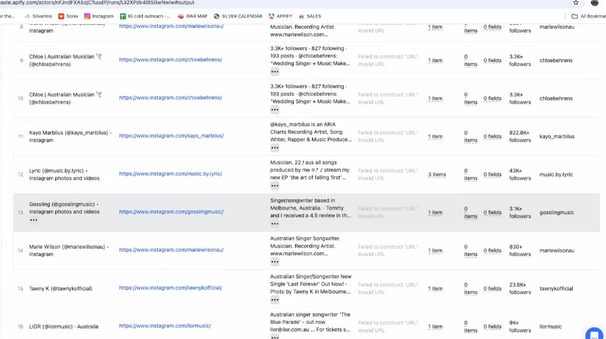
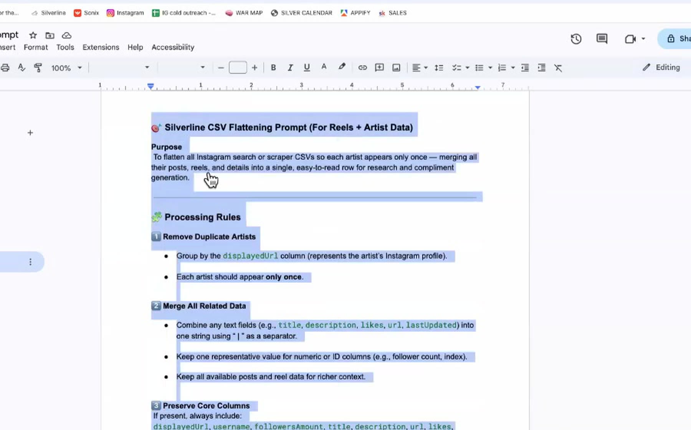
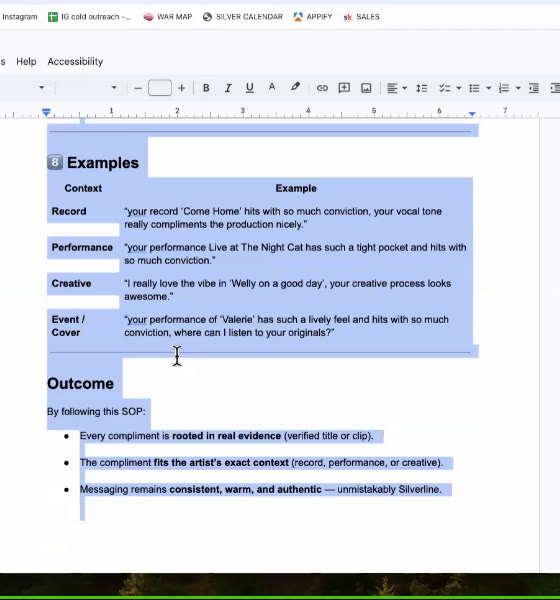
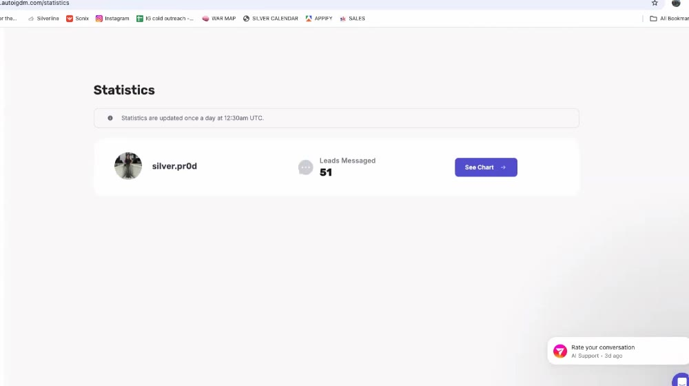

Взят автоматический транскрипт Fathom, а всё, что показывали на экране (сайты, таблицы, поисковые запросы, промпты), вручную считано с кадров видео. Демонстрация Joe (24:12–41:00) на записи почти не слышна из-за связи, поэтому этот блок восстановлен с экрана: промпты приведены дословно, в оригинале на английском, с переводом.
Пометка ≈12:30 — примерный тайм-код в записи.
site:instagram.com … -inurl:/p/ -inurl:/explore/ → прогон через Apify (Google Search Results Scraper) → CSV → чистка в ChatGPT по промпту → Grok пишет персональный комплимент каждому → авто-рассылка в Instagram (AutoIGDM) → ассистентка бронирует discovery-звонки. Результат у Joe: 9–12 discovery-сессий в неделю, «99% стратегии».| Время | Кто | Что происходит |
|---|---|---|
| 0:00–3:04 | все | Сбор, разговоры (Thai Red Bull и т.п.). Можно пропустить. |
| 3:04 | wayvbeats | Почему важно, кому продаёшь. Кейс Fanny 808. |
| ≈4:50 | wayvbeats | Экран: Spotify-метод (артист LEE., плейлист BLUETOOTH, рекомендации). |
| ≈8:45 | wayvbeats | Экран: Google-таблица GREAT ARTIST LEADS, пример «богатого, но слабого» артиста. |
| ≈11:00 | wayvbeats | Метод «украсть клиентов» из комментариев под type beat’ами. |
| ≈12:30 | wayvbeats | Живой пример аутрича артисту kampaign.wo. |
| ≈16:30 | wayvbeats | Inbound: reels с CTA + ManyChat, пример переписки. |
| ≈17:45 | wayvbeats | Опросы в Instagram-сторис для сбора лидов. |
| 19:15 | JR → wayvbeats | Q&A: как монтировать «journey»-reels (экран: CapCut). |
| 24:12 | Joe | Старт блока Joe. Экран: доска Miro «How to leadsource artist’s like a pro producer». |
| 27:39 | Joe | Apify → Google Search Results Scraper, запуск поиска. |
| 29:45 | Joe | Календарь: загрузка discovery-звонками. |
| 30:28 | wayvbeats, Joe | Фильтр по богатым районам (геолокация). |
| 32:58 | wayvbeats | Идея: голосовые в Instagram без записи (из платного шаблона агентства). |
| ≈33:40 | Joe | Экспорт CSV, промпт очистки в ChatGPT (проект «Silverline production project»), AutoIGDM. |
| 35:52 | Joe | Grok + промпт-SOP персональных комплиментов. |
| 37:18 | Joe | Клиентка из этой системы: $1 400. |
| 39:31–42:00 | wayvbeats, Nate | Призыв внедрить сразу; идея с Suno под каждого артиста. |
| 42:07 | wayvbeats, JR | ICP: христианские рэперы (опыт JR). |
| 44:49 | JR | Контент под плейсменты: продюсерам — семплы. |
| 48:21 | Segway, Max | Email-база с YouTube → лид-магнит → DM. |
| 52:01 | Max | Как применить к продаже лупов; YouTube Shorts vs Instagram. |
| 1:01:31–1:17:40 | все | Dropbox Chart Chasers, ежемесячные «wins», менеджмент, Apple Music, лупы под Gunna. |
«Если ты целишься не в того человека, ты толкаешь в гору. Даже с лучшими битами, если им это не нужно, продажи не будет».
Делал 95% правильно, но не продавал: созванивался с «худовыми» рэперами из Атланты, которые не готовы платить за биты. Переключился на R&B-артистов и специально искал богатых: профили с дорогими ужинами, хорошей одеждой, часами. Один такой артист прислал $1 000 за эксклюзив, даже без созвона. Стиль битов он не менял (те же Huncho-style R&B биты), поменял только аудиторию.
Идеальный клиент (ICP):

«Это задротство, но в DM у меня поле боя; без таблицы я теряю людей». Колонки:
| Колонка | Что пишет |
|---|---|
| IG Username | ник артиста |
| Status | выпадающий список: Not messaged / Message (waiting for reply) / Messaged (in conversation) / Pitched call |
| Notes | короткая оценка: «Christian rapper, has bread, music isn’t the best, entrepreneur», «Entrepreneur, looks breaded», «Founder, low likes (easy to reach)», «HOLY ICP», «decent image, probably got bread, low following» |
| Prompt | каким поисковым запросом нашёл этого человека (чтобы понимать, какие запросы дают лучших лидов) |
Поисковые запросы из колонки Prompt (как видно на экране; длинные строки в таблице обрезаны):
beverly hills rapper
monaco rapper
ceo OR business owner
site:instagram.com ("entrepreneur" OR "founder") ("rapper" … ← обрезано на экране
site:instagram.com ("rapper" OR "singer") ("mastering" OR … ← обрезано на экране
site:instagram.com ("rapper" OR "artist" OR "musician") ("CE… ← обрезано на экране

Христианский рэпер-предприниматель: 82K подписчиков, но мало лайков («не ведись на 82K»). Бит слабый, при этом на руке iced-out AP. «Есть деньги + предприниматель + музыка слабая = я вижу знаки доллара. Этому человеку я не продаю лиз за $30, ему продаю пакет за 1K, минимум 2». В чате это назвали «идеальным кандидатом на beat pass».
why don't you have more monthly listeners bro?
Почти все отвечают «да, ты прав, почему у меня их мало?». Это комплимент («ты достоин большего»), который заставляет человека задуматься: «ты его хвалишь так, что он этого не замечает».
Главное: не пиши поверхностно («yo you’re hard, let me send beats»). Хорошему рэперу такое пишут десятки людей. 2–3 лишние минуты на изучение артиста окупаются многократно.
Outreach: ты идёшь к человеку. Inbound: человек приходит к тебе. Лучший инструмент для inbound — reels. Если подписчиков мало, нужно постить много.
yoo just peeped ur page btw - that recent song x is fire. u working on any projects atm?
«Люди покупают не из-за того, что ты продаёшь, а из-за того, кто ты. Нужно быть приятным человеком».
«Контент нетворкает за тебя на автопилоте: ты спишь, а reel работает. Просыпаешься, и уже 10 рэперов, которым можно написать. Это гораздо лучше ручного аутрича».
Вопрос JR: как делать видео в стиле «POV: ты легально получил FL Studio, и это изменило твою жизнь» с быстро меняющимися клипами? Ответ wayvbeats (экран: CapCut):
На записи у Joe сильно тормозила связь, речь почти не разобрать. Ниже всё восстановлено по экрану: доска Miro, Apify, ChatGPT, Google Docs с промптами, Grok, AutoIGDM.

| Блок на доске (оригинал) | Перевод |
|---|---|
| Disclaimer: You could be handed every single system to help you become fulltime [worth 100k+] but I guarantee 99% of you will never use this effectively. These people are humans. You need to take the time to develop a relationship with them. Selling them in the DMs is not a good look. P.P.S: You need to have chat gpt+ | Дисклеймер: вам можно дать любую систему, чтобы выйти на фулл-тайм [на 100K+], но 99% из вас не будут ей эффективно пользоваться. Это люди, нужно время, чтобы выстроить с ними отношения. Продавать им прямо в DM — плохо выглядит. P.P.S.: нужен ChatGPT Plus. |
| The problem: “everyone always mentions just reach out to x amount of artists”. But I used to always ask, how do you even do it? | Проблема: все говорят «просто напиши X артистам». А я всегда спрашивал: а где их брать? |
STEP 1: Understanding the method → site:instagram.com + melbourne singer -inurl:/p/ -inurl:/explore/ → What does this do? | Шаг 1: понять метод → поисковая строка → что она делает (см. 5.3). |
| STEP 2: Execution and the source → Go to https://apify.com/ → Go to the google search results scraper | Шаг 2: исполнение → apify.com → Google Search Results Scraper. |
| STEP 3: Rinse and repeat → There is literally no point of doing this if your not going to reach out to the artists here | Шаг 3: повторяй. Нет никакого смысла это делать, если ты не будешь писать этим артистам. |
site:instagram.com + melbourne singer -inurl:/p/ -inurl:/explore/
| Часть | Что делает |
|---|---|
site:instagram.com | Ищет только по Instagram. |
melbourne singer | Ключевые слова: город + роль. Google находит профили, в которых человек сам описывает себя так (в био/имени). |
-inurl:/p/ | Исключает отдельные посты (instagram.com/p/…). |
-inurl:/explore/ | Исключает страницы Explore (хештеги, локации). Остаются профили и reels. |
Пояснение на доске (In short): «You’re telling Google to show only Instagram profiles that describe themselves as a “Melbourne singer.”» Чтобы расширить на похожих артистов (R&B, neo-soul, pop), собирай варианты через OR:
site:instagram.com (melbourne singer OR melbourne musician OR melbourne rnb OR melbourne …)
Запросы, которые Joe набирал вживую в Apify:
site:instagram.com Texas singer single out now -inurl:/p/ -inurl:/explore/ site:instagram.com melbourne singer -inurl:/p/ -inurl:/explore/
Чем конкретнее запрос, тем меньше результатов (первый узкий запрос дал ~20). Хороший запрос даёт до ~300 результатов, примерно половина окажется певцами, будут дубли.
wayvbeats: целься в богатые районы. Пример: Greenwich, Connecticut (богатый пригород). Если скрейпить рэперов оттуда, «у всех есть деньги».
Joe: спрашивает у ChatGPT списки богатых районов. Формулировка с его слов:
Give me all the most affluent areas in [city / country]. Give me suburbs that are next to major cities that have a level of affluence.
apify/google-search-scraper (сделан самим Apify, «Maintained by Apify»). Joe пользуется только им.organicResults → Download.

У Joe в ChatGPT есть Project «Silverline production project» (чаты внутри: CSV cleaning summary, Extract first names CSV, Qualify CSV with compliments, Personalised compliment creation, Search query explanation…). В проект загружается CSV из Apify и вставляется промпт «Silverline CSV Flattening Prompt» (полный текст в разделе 6.1).
Зачем: без фильтра «получаешь кучу повторяющихся аккаунтов, это бесит». Промпт склеивает все посты/reels одного артиста в одну строку, оставляет нужные колонки и отдаёт ссылку на скачивание.
Результат на звонке: 383 строки → 261 уникальный артист, файл flattened_silverline_artists.csv.
У Joe есть и улучшенная версия: «Silverline CSV Cleaning & Personalized Compliment SOP (Revised)». Она дополнительно нормализует подписчиков, отсекает аккаунты с >20 000 подписчиков, а также студии, лейблы и другие организации (раздел 6.2). Joe обещал скинуть проект ChatGPT с промптом-фильтром в группу.

flattened_silverline_artists.csv + вставляет промпт «Silverline SOP: Personalized Compliment Creation» (раздел 6.3).displayedUrl, имя, songOrPerformanceTitle, sourceUrl, contextType (record / performance / creative), compliment, needsReview.needsReview = true.

«Когда Joe мне это показывал, я ничего не понял. Сделайте это сразу после звонка. Когда я начал, получал дубли и людей, которые вообще не артисты, и пришлось адаптироваться. Это как ринг: тебя будут бить, нужно быть гибким». Его собственный таргет эволюционировал так: предприниматели → R&B-певцы → теперь целенаправленно «те, у кого слабая музыка».
Joe: «Я думал, если разберусь, этого не знает никто. Стоит немного пострадать, пока не разберёшься». Joe готов созвониться и помочь, если будут вопросы.
Оригинал на английском (так их и надо вставлять в ChatGPT / Grok), под каждым краткий перевод. Переписано с экрана.
🎯 Silverline CSV Flattening Prompt (For Reels + Artist Data) Purpose To flatten all Instagram search or scraper CSVs so each artist appears only once — merging all their posts, reels, and details into a single, easy-to-read row for research and compliment generation. ──────────────────────── 🧩 Processing Rules 1️⃣ Remove Duplicate Artists • Group by the displayedUrl column (represents the artist's Instagram profile). • Each artist should appear only once. 2️⃣ Merge All Related Data • Combine any text fields (e.g., title, description, likes, url, lastUpdated) into one string using " | " as a separator. • Keep one representative value for numeric or ID columns (e.g., follower count, index). • Keep all available posts and reel data for richer context. 3️⃣ Preserve Core Columns If present, always include: displayedUrl, username, followersAmount, title, description, url, likes, lastUpdated 4️⃣ Output Format • Save as a single CSV file named flattened_silverline_artists.csv. • Provide total rows before and after flattening. • Share a download link at the end. ──────────────────────── ⚙️ Example Command Clean and flatten this CSV using the Silverline Flattening Prompt. Each artist (based on displayedUrl) should appear once with all their reels and captions merged using " | " separators. Then give me the download link and show how many unique artists remain.
Перевод: склеить CSV так, чтобы каждый артист был одной строкой. (1) Группировать по displayedUrl (ссылка на профиль), каждый артист один раз. (2) Текстовые поля (title, description, likes, url, lastUpdated) объединить через « | »; для числовых/ID оставить одно значение; сохранить все посты и reels для контекста. (3) Обязательные колонки: displayedUrl, username, followersAmount, title, description, url, likes, lastUpdated. (4) Сохранить как flattened_silverline_artists.csv, показать число строк до/после, дать ссылку на скачивание. Последний блок — команда, которую пишешь вместе с файлом.
Обновлённая версия чистки (на экране видны разделы 1–5; это начало документа, дальше идёт SOP комплиментов из 6.3).
🎯 Silverline CSV Cleaning & Personalized Compliment SOP (Revised) Purpose To prepare artist data for outreach and create one personalized, natural compliment that follows the Silverline brand voice and compliment framework. ──────────────────────── 1️⃣ CSV Cleaning Rules Objective Ensure all artist accounts are clean, unique, human (not organisations), and within follower thresholds before generating compliments. Steps 1. Remove Duplicates Each account in the displayedUrl column must appear only once. Remove any duplicate rows. 2. Normalize Follower Counts In the followersAmount column: • Convert "K" into ×1,000 (e.g., 2.3K → 2300) • Convert "M" into ×1,000,000 (e.g., 1.2M → 1200000) 3. Filter by Follower Count • Remove any accounts with more than 20,000 followers. • Keep rows that have blank, missing, or non-numeric follower values (e.g., "1 week ago"). 4. Remove Non-Artist or Organisation Accounts (NEW) Delete rows where the displayedUrl, bio, or username suggests the account belongs to an organisation, collective, or business — not an individual singer or performer. Remove accounts containing words such as: studio, records, recordlabel, productions, production, management, collective, events, entertainment, radio, tv, festival, bandpage, officialpage, group, choir, church, agency, academy, school, company Keep accounts that appear to represent individuals, especially those containing clear first names or personal identifiers (e.g., johnsmithmusic, emilyroseofficial). 5. Final Report After cleaning, provide: • Number of rows removed • Number of rows remaining • Download link to the cleaned CSV
Перевод: (1) удалить дубли по displayedUrl; (2) привести подписчиков к числам (K → ×1 000, M → ×1 000 000); (3) удалить аккаунты с >20 000 подписчиков, но оставить строки, где подписчиков не видно; (4) удалить студии, лейблы, продакшены, менеджмент, коллективы, ивенты, радио, ТВ, фестивали, хоры, церкви, агентства, академии, школы, компании (по списку слов), оставить личные аккаунты с именами; (5) отчёт: сколько удалено, сколько осталось, ссылка на CSV.
Silverline SOP: Personalized Compliment Creation Purpose To craft one authentic, research-driven compliment per artist that reflects Silverline's tone, demonstrates genuine listening, and references a specific song or performance. This SOP ensures every compliment feels personal, artist-specific, and aligned with Silverline's creative ethos. ──────────────────────── 1️⃣ Objective Create one natural, context-specific compliment per artist — written as if by a real producer who has genuinely engaged with their music. ──────────────────────── 2️⃣ Research Workflow Follow these steps in order for each artist: Step 1: Instagram Scan (Primary Source) • Review the artist's profile grid, focusing on the top 9 posts. • Look for posts that mention: ◦ A song title in the caption or video overlay ◦ Phrases like "out now," "single," "cover of," or "live at" ◦ Clear visual or text references to performances or originals • Extract one specific title or performance that best represents their artistry. • Record its Instagram post URL as the verification source. Step 2: Secondary Source Check (if unclear) • If no title is identifiable on Instagram, check one secondary source: ◦ Spotify artist page (track titles) ◦ YouTube channel (video titles) • Take one verified title only. • Record the source URL used for verification. Step 3: Fallback Options • If no title or official release exists: ◦ Reference a named live performance (e.g., "Live at The Night Cat"). • If no suitable title or performance can be confirmed: ◦ Mark for manual review. Do not generate a vague or placeholder compliment. ──────────────────────── 3️⃣ Detection Heuristics When scanning posts or captions, look for: • Quoted or Title-Case phrases near trigger words: "out now", "single", "live at", "cover of", "my song" • Caption patterns like: ◦ "Song Title" ◦ Song Title – Live ◦ Cover: Song Title by [Artist] Then assign a context type: Type | When to Use | Label [таблица и разделы 4–7 на экране не показаны — см. примечание ниже] … • contextType drives correct phrasing. • Event/cover singers end with ", where can I listen to your originals?" • If no valid reference exists → set needsReview = true and leave compliment blank. ──────────────────────── 8️⃣ Examples Context | Example Record | "your record 'Come Home' hits with so much conviction, your vocal tone really compliments the production nicely." Performance | "your performance Live at The Night Cat has such a tight pocket and hits with so much conviction." Creative | "I really love the vibe in 'Welly on a good day', your creative process looks awesome." Event / Cover| "your performance of 'Valerie' has such a lively feel and hits with so much conviction, where can I listen to your originals?" Outcome By following this SOP: • Every compliment is rooted in real evidence (verified title or clip). • The compliment fits the artist's exact context (record, performance, or creative). • Messaging remains consistent, warm, and authentic — unmistakably Silverline.
Joe пролистнул середину документа за долю секунды, поэтому разделы 4–7 на видео не попали. Их суть видна в ответе Grok, который на них ссылается:
record → «your record …», performance → «your performance …», creative → добавить «your creative process looks awesome».Если нужен полный рабочий вариант, эти пункты можно дописать в промпт как разделы 4–7 своими словами. Получится функционально тот же SOP.
Перевод сути: на каждого артиста одно живое комплимент-предложение «от продюсера, который реально слушал». Порядок: (1) смотришь 9 верхних постов в Instagram и ищешь название трека / «out now» / «single» / «cover of» / «live at», записываешь ссылку на пост как доказательство; (2) если не нашёл, смотришь одну страницу Spotify или YouTube; (3) если релизов нет, ссылаешься на конкретное выступление; если и его нет, ставишь «на ручную проверку» (needsReview = true) и не пишешь размытый комплимент. Каверщикам и ивент-певцам в конце: «, where can I listen to your originals?» (где послушать твои собственные треки?).
why don't you have more monthly listeners bro? yoo just peeped ur page btw - that recent song x is fire. u working on any projects atm? what kind of vibe you on? yo bro, I saw you vote on my story — [конкретный комплимент]. Are you working on any projects at the moment?
Guys, I normally never do this, but I'm giving away a beat pack of unreleased beats, which have never been on YouTube, for completely free. Send me a DM on Instagram with the word "BEATPASS" and I'll send it to you.
Совет Max: попроси ChatGPT сверстать письмо в HTML («I need this type of email, make it look nice, put a little picture at the top»).
wayvbeats предположил, что христианские рэперы платят охотнее («мораль»). JR (продаёт им): «ты неправ на 50%: большинство очень бедные и самые гордые люди, которых я встречал, хуже или на уровне мейнстрим-рэпа». Вывод wayvbeats: оценивай конкретного человека по его Instagram («готов ли он созвониться? готов ли инвестировать в звук?»). Насмотренность приходит с практикой.
У Segway есть YouTube и бесплатные загрузки на BeatStars, то есть «золотая жила» email-контактов артистов. Совет wayvbeats: email-кампания с лид-магнитом (текст в 6.5) → артисты сами пишут в Instagram → разговор → созвон. Segway решает, что лучше для него: звонки или голосовые. Принцип: играй от сильных сторон (ментор wayvbeats: «если хорошо продаёшь на звонках, продавай на звонках»). Если голосовые игнорируют или оплаты срываются, переходи на звонки.
site:instagram.com [район/город] [singer|rapper|rnb] -inurl:/p/ -inurl:/explore/ (+ варианты через OR).apify/google-search-scraper → Max pages per search = 100 → Save & Start → Export CSV (Organic results).needsReview = true проверить вручную.Массовые авто-DM в Instagram могут привести к ограничениям аккаунта. Начинай с небольших объёмов и прогретого аккаунта. Joe сам пока делает часть вручную.
| Термин | Значение |
|---|---|
| ICP | Ideal Customer Profile — портрет идеального клиента. |
| Lead / лид | Потенциальный клиент (здесь: Instagram-аккаунт артиста). |
| Outreach / cold outreach | Ты первый пишешь человеку (холодный — он тебя не знает). |
| Inbound | Человек сам приходит к тебе (через контент, CTA, опросы). |
| CTA | Call to action — призыв к действию («прокомментируй слово X»). |
| ManyChat | Сервис автоответов в Instagram: на комментарий с кодовым словом шлёт DM. |
| Lead magnet | Бесплатная ценность в обмен на контакт/действие (бесплатный пак битов). |
| Lease / exclusive | Лиз — неэксклюзивная лицензия на бит (дёшево); эксклюзив — полные права (дорого). |
| Beat pass | Пакет/подписка на биты (продукт JR и Segway). |
| Discovery call | Первый ознакомительный звонок, на котором продаётся услуга. |
| Appointment setter | Человек, который переписывается с лидами и бронирует звонки. |
| Placement | Твой бит/семпл попал в релиз известного артиста. |
| Apify / Actor | Платформа скрейпинга; «актёр» — готовый скрейпер (тут Google Search Results Scraper). |
| Scraping / CSV | Автоматический сбор данных с сайтов / табличный файл с результатами. |
| «Has bread» | Сленг: «у него есть деньги». |
| Glazing | Сленг: лесть, захваливание. |
| SOP | Standard Operating Procedure — пошаговая инструкция (здесь — промпт-регламент). |
Источник: запись Fathom «CC SALES — HOW TO FIND RAPPERS» (25.10.2025). Транскрипт Fathom + распознавание экрана по кадрам видео. Неразборчивые места помечены.